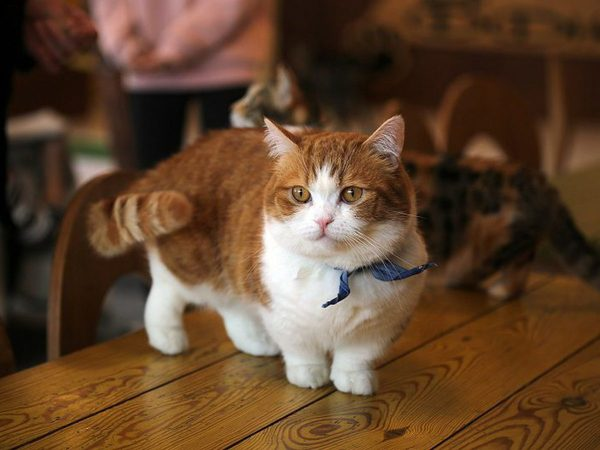
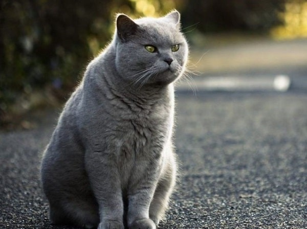
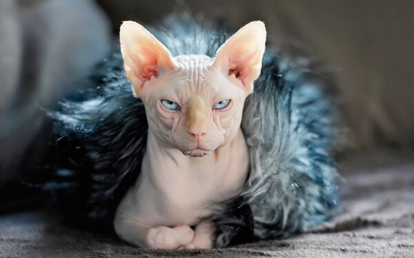

World of Cats
There are two means of refuge from the miseries of life: music and cats
Things cats love
Something cute about cats

Cats Love Taking Naps
It's no secret that cats love to sleep.
In fact, the average kitty sleeps for a whopping 12 to 16 hours per day!
In fact, the average kitty sleeps for a whopping 12 to 16 hours per day!
Cats Love Grooming and Being Groomed
Did you know adult cats spend approximately half of their waking hours grooming?
Clearly, grooming is an important part of a kitty's life!
Clearly, grooming is an important part of a kitty's life!
Cats Love Scratching and Clawing
One of cats' basic instincts is to sharpen their claws by scratching and clawing
different surfaces.
They also happen to get a ton of joy from it, too.
They also happen to get a ton of joy from it, too.

Cats Love Daily Playtime
Playtime is serious business for cats, all the way from kittenhood
to
their senior years.
Cats species
They are crowded

Munchkin
The Munchkin cat or Sausage cat is a relatively new breed of cat characterized by its very
short legs, which are caused by genetic mutation. The Munchkin is considered to be the
original breed of dwarf cat.
Learn more
Siamese
The Siamese cat is one of the first distinctly recognized breeds of Asian cat. Derived from
the Wichianmat landrace, one of several varieties of cat native to Thailand.
Learn more

British Shorthair
The British Shorthair is the pedigreed version of the traditional British domestic cat, with
a distinctively stocky body, dense coat, and broad face.
Learn more
Ragdoll
The Ragdoll is a cat breed with a color point coat and blue eyes. Their form is large and
muscular and their coat is silky soft and semi-longhair.
Learn more

Sphynx
The Sphynx cat, or simply Sphynx, is a breed of cat known for its lack of fur. Hairlessness
in cats is a naturally occurring genetic mutation, and the Sphynx was developed through
selective breeding of these animals, starting in the 1960s.
Learn more